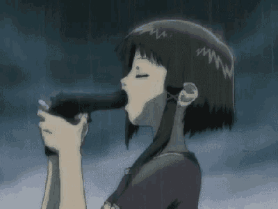

Lain Iwakura, a girl in her second year of middle school, lives in Setagaya City, Tokyo, Japan with her middle-class family, consisting of her inexpressive older sister Mika, emotionally distant mother Miho, and computer-obsessed father Yasuo; Lain herself is extremely introverted and socially isolated. The status-quo of her life becomes upturned by a series of bizarre incidents that take place after girls from her school receive an e-mail from a dead student, Chisa Yomoda, and she pulls out her old computer in order to check for the same message. Lain finds Chisa telling her via email that she is not dead but has merely "abandoned her physical self" and is alive deep within the virtual realm of the Wired itself, where she claims she has found "God". From this point, Lain is caught in a series of cryptic and surreal events that see her delving deeper into the mystery of the network in a narrative that explores themes of consciousness, perception, and the nature of reality. "The Wired" is a virtual realm that contains and supports the sum of humanity's communication networks, created with the telegraph, television, and telephone services, and expanded with the Internet and cyberspace. The series posits that the Wired could be linked to a system that enables subconscious communication between people and machines without physical interface. Such a system is explained by the Schumann resonances, a property of the Earth's magnetic field that theoretically allows for unhindered long-distance communications. If such a link were created, the network would become equivalent to reality as the general consensus of all perceptions and knowledge, and the increasingly thin line between what is real and what is virtual would fracture. Masami Eiri is the project director on Protocol Seven, the next-generation Internet protocol, for major IT company Tachibana General Laboratories. He had secretly included code of his very own creation to give himself control of the Wired. He then transferred his own consciousness into the Wired, leaving his body in the physical world to die. Masami explains that Lain is the artifact by which the wall between the virtual and material worlds is to fall, and he needs her to go into the Wired and "abandon the flesh", as he did, to achieve his plan. The series sees him trying to convince her through interventions, using the promise of unconditional love, romantic seduction and charm, and finally threats and force. Meanwhile, a complex game of hide-and-seek unfolds between the "Knights of the Eastern Calculus" (based on the Knights of the Lambda Calculus), hackers whom Masami claims are "believers that enable him to be a God in the Wired", and Tachibana General Laboratories, who try to regain control of Protocol Seven. In the end, Lain realizes, after much introspection, that she has control over everyone's mind and over reality itself. Her dialogue with different versions of herself shows how she feels shunned from the material world, and is afraid to live in the Wired, where she has the opportunities and responsibilities of an almighty goddess. The last scenes feature her erasing everything connected to herself from everyone's memories of her. She is last seen encountering her closest friend Alice once again, who is now married, though Lain herself is unchanged. Lain promises herself that she and Alice will meet again anytime as Lain can literally go and be anywhere she desires between both worlds.